N‑able™ N-central® is a Remote Monitoring and Management (RMM) tool commonly used by Management Service Providers (MSPs). RMM agents are installed on MSP customer endpoints to discover IT assets and remotely monitor and manage them.
This document describes how to use N-central to discover and monitor a WatchGuard Firebox.
Platform and Software
The hardware and software used to complete the procedures in this document include:
- Firebox with Fireware v12.10 or higher
- N-central 2023.8.0.11
- Windows Software Probe 2023.8.0.11 installed on a Windows Server 2019
N-central supports two deployment types: on-premises and hosted. In this document, we use a hosted N-central deployment hosted in the cloud.
This diagram outlines the N-central solution integration:
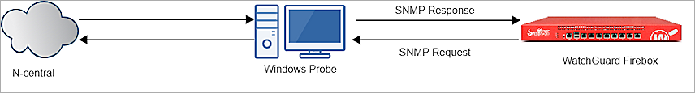
Configure the Firebox
SNMP Settings
You must configure the Firebox to accept SNMP polls from an SNMP server. The IP address of the SNMP server is the IP address of the Windows server that sends SNMP probes to the Firebox and reports information to the SNMP server.
- Log in to Fireware Web UI (https://<Firebox-IP-address>:8080).
- Select System > SNMP.
- From the Version drop-down list, select v3.
- In the User Name text box, type the username. In our example, we type WatchGuard.
- From the Authentication Protocol drop-down list, select SHA1.
- In the Password and Confirm text boxes, type the authentication password.
- From the Privacy Protocol drop-down list, select DES.
- In the Password and Confirm text boxes, type the encryption password.
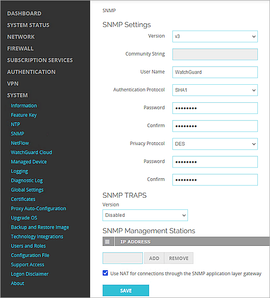
- Click Save.
Add an SNMP Policy
To enable the Firebox to receive SNMP polls from the Windows server, you must add an SNMP packet filter policy.
- Select Firewall > Firewall Policies.
- Click Add Policy.
- From the Packet Filter drop-down list, select SNMP.
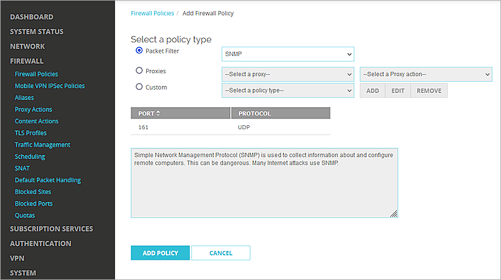
- Click Add Policy.
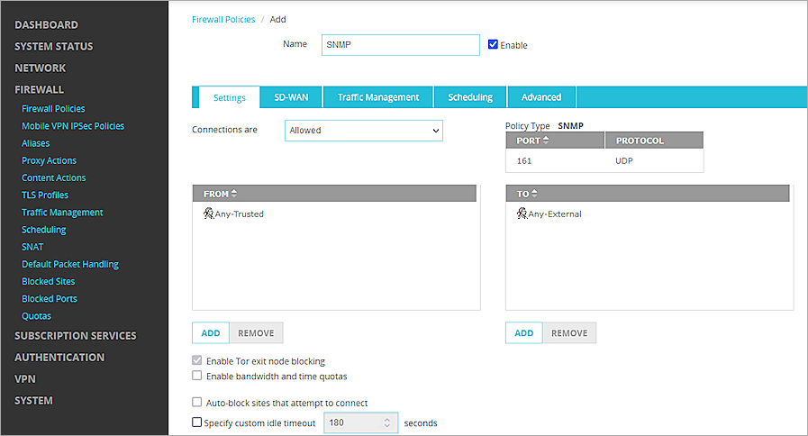
- In the From section, select Any-Trusted. Click Remove.
- Click Add.
The Add Member window opens. - From the Member type drop-down list, select Host IPv4.
- Type the IP address of the SNMP server.
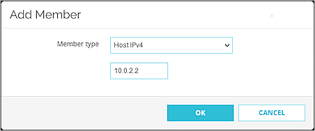
- Click OK.
- In the To section, select Any-External. Click Remove.
- Click Add.
- Select the alias Firebox. Click OK.
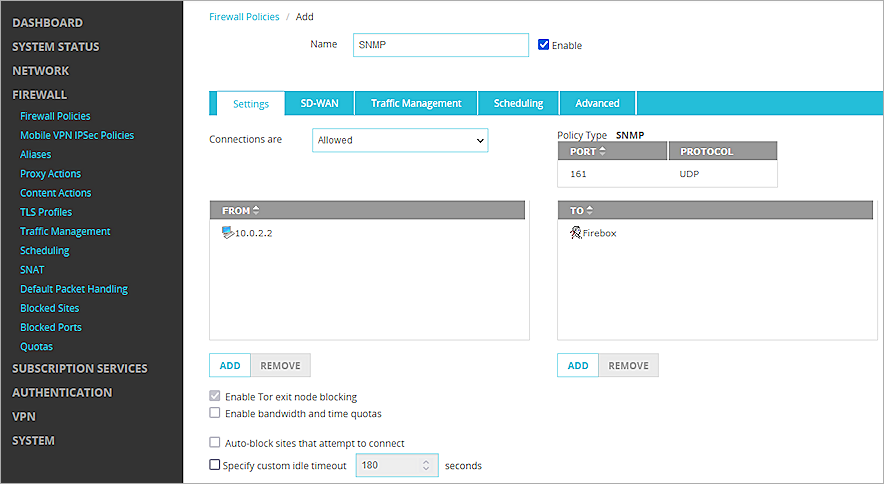
- Click Save.
N-central Configuration
Add a Customer
N-central classifies devices by customer to make the devices for a customer easy to manage. In N-central, you must first create a customer and then add devices to this customer.
- Log in to the N-able N-central as an administrator.
- Select Actions > Add Customer.
- In the Customer Name text box, type a name to identify the customer.
- Leave other settings as the default settings.
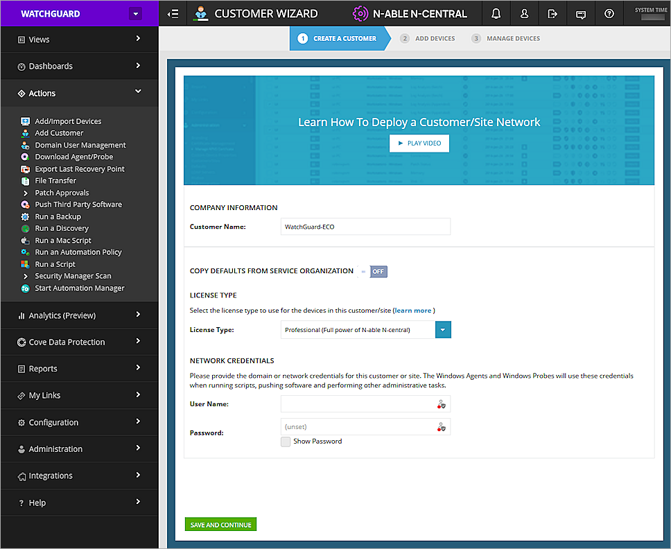
- Click Save and Continue.
The Add Devices page opens.
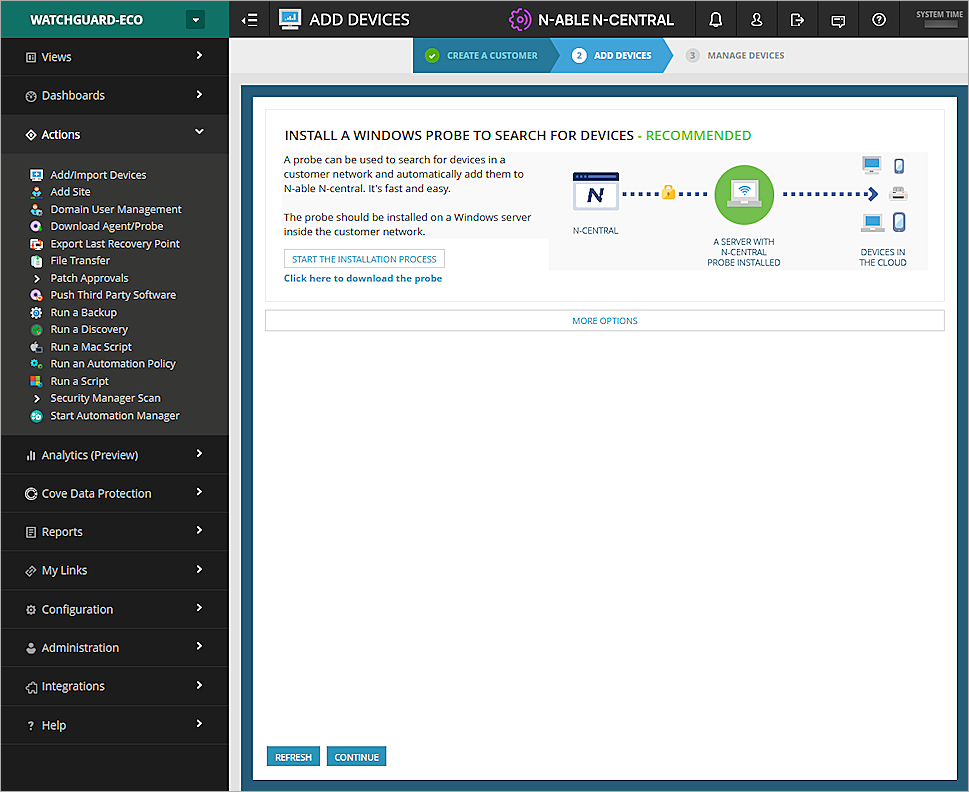
From the Add Devices page, you can download the probe installer.
Install a Windows Probe
This procedure starts on the Add Devices page at the end of the previous procedure.
- If necessary, go back to the Add Device page, then select Actions > Add/Import Devices.
- Select Click here to download the probe.
- Install the probe on a Windows server. For information about how to install the probe, go to the N-central documentation.
- After you install the probe, select Administration > Probes to view the probe status for that customer.
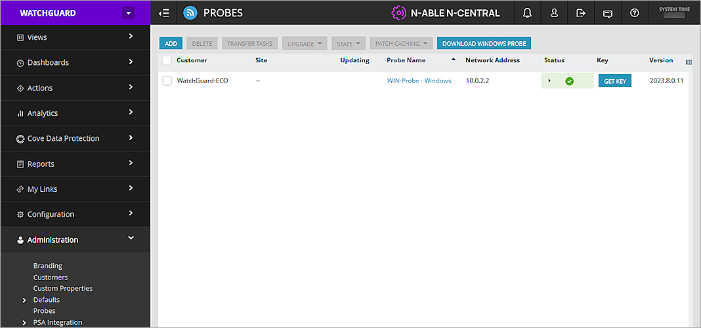
Enable the SNMP Service
For the Windows server to monitor the Firebox, you must install and enable the SNMP service.
- On the Windows server, select Start > Run.
- Type services.msc and start the SNMP Service.
- Right-click the SNMP Service and select Properties.
- Select the Security tab.
- In the Accepted community names list, click Add and add public.
- In the Accept SNMP packets from these hosts list, click Add and add the IP address of the Firebox.
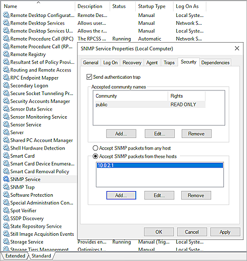
- Click Apply > OK.
Now the probe can detect and monitor devices in the same network.
Discover the Firebox to Monitor
- In N-central, select the customer you added.
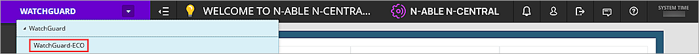
- Select Actions > Add/Import Devices.
- Click Add a Discovery Job.
- From the Probe drop-down list, select the probe server you installed.
- In the Discovery Type section, type the IP Range you want the probe to detect. In this example, the probe server is set up to detect devices with IP addresses in the range 10.0.2.1 to 10.0.2.10. You can also specify the network as an IP address and netmask. To do this, select IP Address and Netmask.
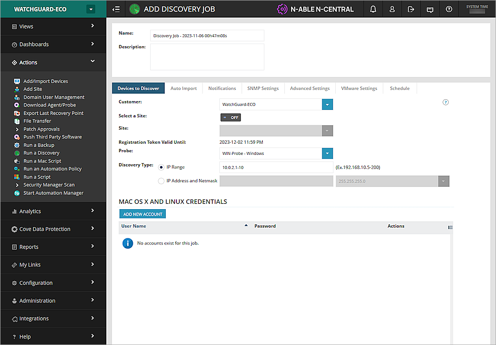
- Select the Auto Import tab. You can define which types of devices are imported automatically after discovery. In our example, we select Other and Switch/Router.
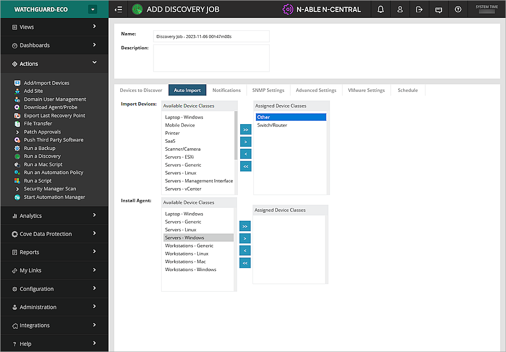
- Select the Schedule tab. From the Type drop-down list, select when you want this discovery job to run. In our example, this is set to Now which means it runs immediately after this job is created.
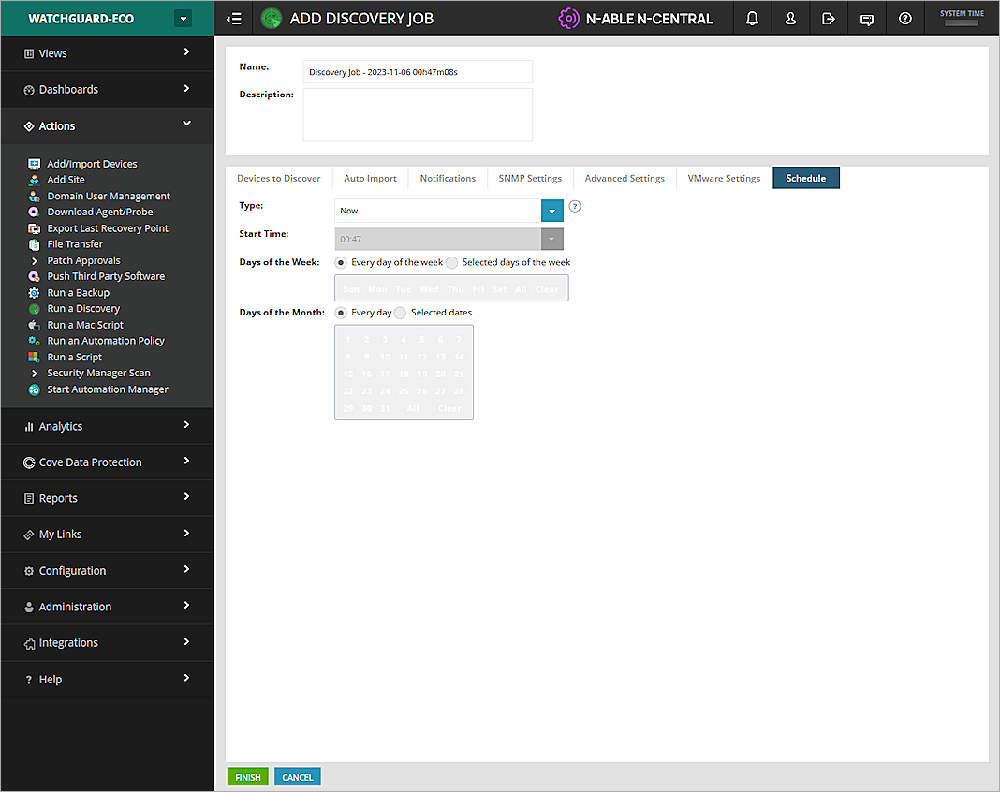
- Click Finish.
The probe server starts the discovery job. - To view the job status, select Views > Job Status.
Another way to start a discovery job is to select Actions > Run a Discovery. - After the job is finished, select Views > All Devices.
The discovered devices open in a list.
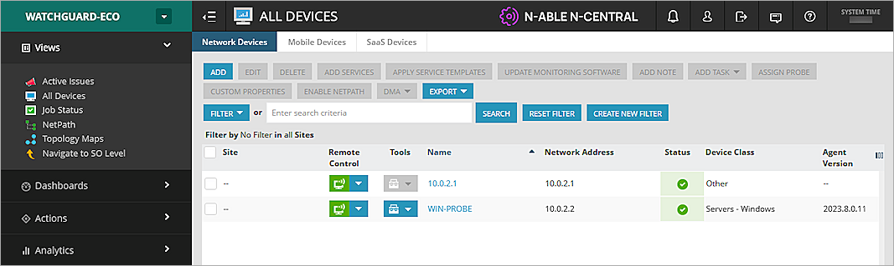
- Find your Firebox in the list and click on its name.
- Select the Settings tab, then select Monitoring Options.
- Select the Use SNMP check box.
- From the SNMP Version drop-down list, select v3.
- In the Username text box, type the user name WatchGuard.
- From the Authentication Protocol Method drop-down list, select SHA1 and type the password you set on the Firebox.
- From the Privacy Protocol Method drop-down list, select DES 56 and type the password you set on the Firebox.
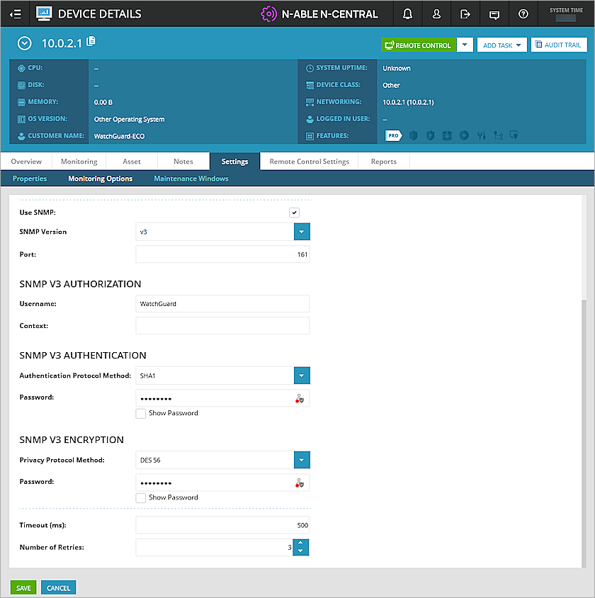
- Leave all other settings at the default values.
- Click Save.
Self-Define Services
In N-central, you add a service that defines the information to monitor for a device. There are many pre-defined services you can use, but they might not be suitable for your needs.
To define a new or custom service:
- Select Administration > Service Management > Custom Services.
- Click Add.
- Select Service > SNMP.
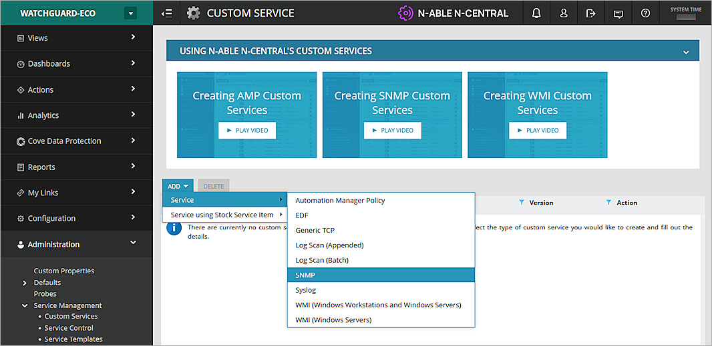
- In the Name text box, type a descriptive name for this service.
- Each service can include one or more queries. To add a query, in the Queries tab, click Add.
- In the Query Name text box, type a name for the query.
- Click Add OID, and add the OIDs of the items you want to query. Go to the Appendix for a list of OIDs.
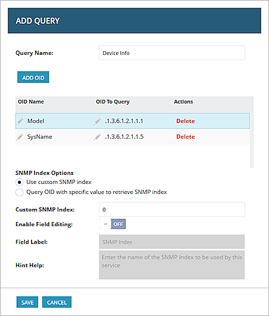
- Click Save.
- Select the Data and Thresholds tab, then click Add Metric.
If you add several query items, you must add the same number of metrics with corresponding variables.
- In the Metric text box, type the metric.
- From the Variable to Use drop-down list, select the corresponding variable.
- From the Data Type drop-down list, select the data type. In our example, we select String.
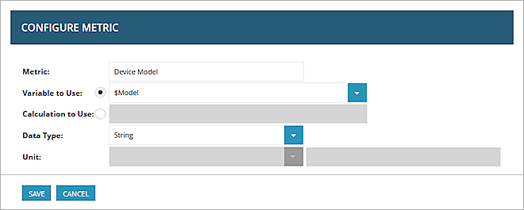
- Click Save.
- Repeat steps 9-13 to create another metric.
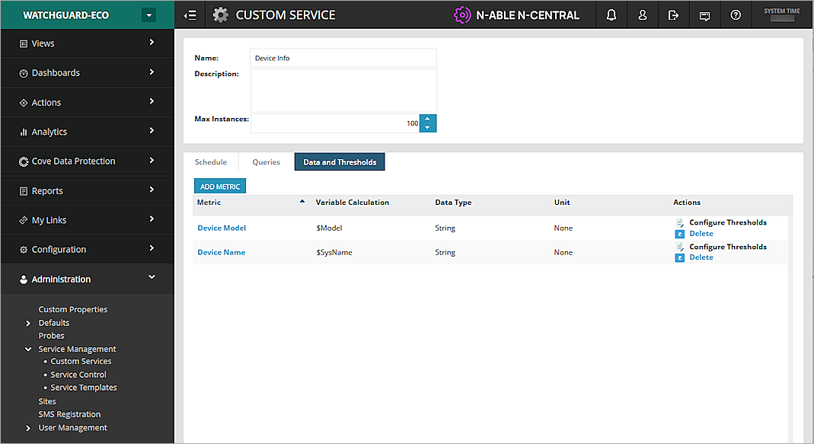
- Click Save.
- On the All Devices page, select the device to monitor and click Add Services at the top of the page.
You can also click the device name to go to the device information page. - Select Monitoring > Status.
- Click Add.
- From the Monitoring Appliance drop-down list, select the Windows Probe server. All available services are shown, including the SNMP service that you defined earlier (Device Info).
- Add one instance to run the monitor. Click Apply to link the service to the Firebox.
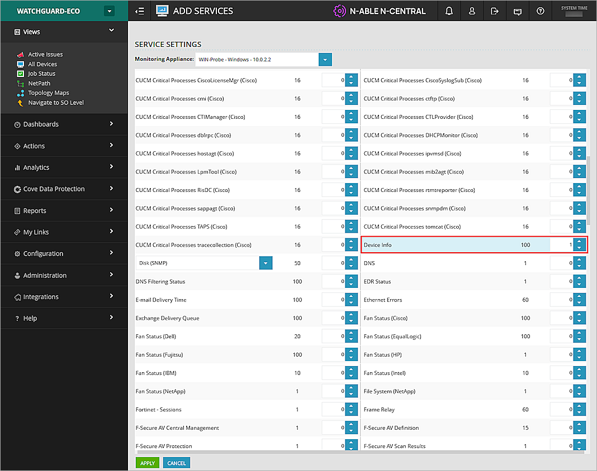
Test the Integration
- Select the device name to go to the device information page.
- Select Monitoring > Status.
- Verify that the service you added appears and the SNMP check is ongoing.
- When the SNMP check has finished successfully, a green check mark appears in the Status column.
If a custom service returns a status with no data, restart all N-able related services on the computer installed with the probe service. When this is complete, the custom service will detect data.
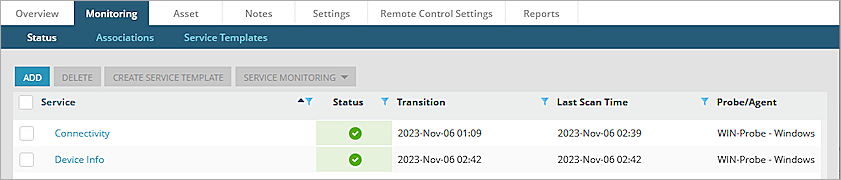
- Click the service name to view the status details.
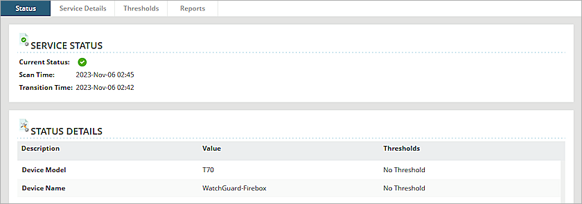
Appendix
About SNMP OIDs and MIBs
SNMP queries are typically formatted as a numeric expression. This is referred to as an Object Identifier (OID). An OID is a numeric reference to a unique object or piece of data.
A Management Information Base (MIB) is a database of OIDs that maps object names to a specific OID.
There are two types of MIBs: standard and enterprise. Standard MIBs are definitions of network and hardware events used by many different devices. Enterprise MIBs provide information about events that are specific to a single manufacturer.
The Firebox supports eight standard MIBs: IP-MIB, IF-MIB, TCP-MIB, UDP-MIB, SNMPv2-MIB, SNMPv2-SMI, RFC1213-MIB, and RFC1155 SMI-MIB.
For more information about Firebox Enterprise MIBs, go to Enterprise MIB File Details.
Find OIDs
To get information through SNMP, you must know the OID of the object. An MIB browser is a good way to view the available MIB and OIDs. There are several free MIB browsers.
As an example, these steps describe how to use the iReasoning MIB browser:
- Install and open iReasoning.
- In the Address text box, type the IP address of your Firebox.
- Click Advanced.
- To read the MIB information for monitoring, in the Read Community text box, type public.
- From the SNMP Version drop-down list, select the SNMP version. In this example, we select SNMPv3.
- From the Operations drop-down list, select Walk.
All Firebox MIBs open in a list.
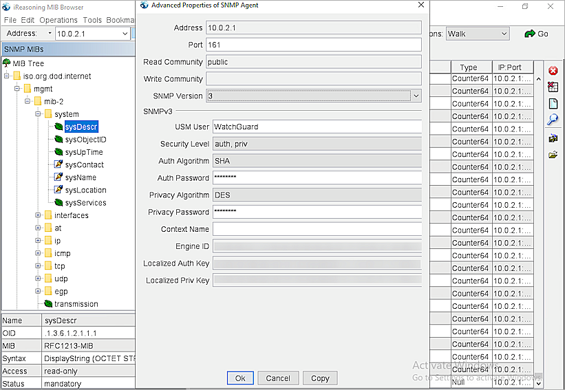